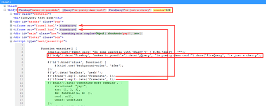
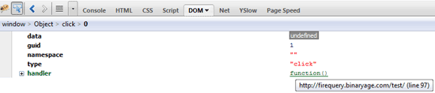
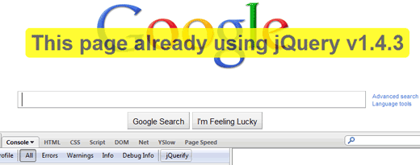

Firefox'un eklentisi FireBug'ı bilmeyeniniz yoktur. FireBug öyle büyük bir eklenti ki onun üzerine kurulan birçok eklentiler var. Bu eklentide FireBug yeteneklerini geliştirmek için kullanılan bir eklenti.
Bu eklenti jQuery ile kod yazarken çok işimize yarayacak. Bu eklenti sayesinde FireBug'ın CSS yeteneklerine yakın bir çözümü jQuery üzerinde sağlayacağız. FireBug bize CSS açısından belirlediğimiz nesneye uygulanan css özelliklerini yakalama ve hangi css dosyasının hangi satırında olduğu gösterir. Benzer bir özelliği FireQuery bize sağlar.
Bu eklentide jQuery ile etkilediğimiz elemanlar hakkında benzer bir bilgi veriyor bize. Jquery ile etkilenen elemana hangi işlev ile etki yaptığımızı ve hangi fonksiyon ve kod ile etki ettiğimiz gösteriyor.
jQuery bulunmayan sayfalarda da jquery kütüphanesini ekliyor. Böylelikle her sitede FireBug özelliklerini jQuery yardımı ile kullanma imkanı sunuyor bize.
jQuery Data verileri Gösterir
Eklentiyi kurduktan sonra Firebug'ı açarız ve HTML sekmesine geliriz. Aşağıdaki bir pencere ile karşılaşırız.

jQuery data kullanarak web sitesine gömdüğümüz verileri gösterir bize. Bu durum dinamik olarak eklediğimiz jQuery verilerini kontrol ederken çok işimize yarar.
Bir Elemana Atanmış Fonksiyonları Gösterir
Test sayfasında h1 elemanına tanımlana aşağıdaki fonksiyon kodunu görüyoruz.
$('h1').bind('click', function() { $(this).css('background-color', '#fee'); });
Bu tanımı FireBug HTML sekmesinde FireQuery yardımı ile aşağıdaki gibi görürüz.
Bir elemana tanımlanmış fonksiyonları bulmaya yarar. Süper bir özelliktir bu. Tanımlana fonksiyon konsolda yukarıdaki gibi görünür.

function() üzerine geldiğimizde bu elemena atama yapılan kodu ve satır numarasını gösterir. Bu bizi birçok yükten kurtaran süper bir özelliktir.
jQuery Olmayan Sitelere jQuery Ekleme Özelliği
Bir sitede jQuery kütüphanesi olmasa da bu eklenti etkin olduğu tarayıcılarda jQuery eklenmiş gibi olur. Bu sayede site üzerinde jQuery kolaylıklarını uygular ve sonuçlarını görebiliriz.

Bu sayede Konsolda jQuery kolaylıklarını kullanarak jquery eklenmemiş olsa da bu sitede jQuery varmış gibi rahat kod yazabiliriz.
Bu eklentiyi bana gösteren Orhan Ekici'ye ve ona gösteren Volkan Özçelik'e teşekkürler.
FireBug büyüksün.
Kaynaklar
- http://firequery.binaryage.com/
- https://addons.mozilla.org/en-US/firefox/addon/12632/
- http://elijahmanor.com/webdevdotnet/post/digging-into-the-firequery-add-on-for-jquery.aspx
- http://www.pgs-soft.com/firequery-firebug-extension-for-jquery-development.html
- http://javascriptly.com/2009/12/firequery-an-introduction/
Yorumlar !